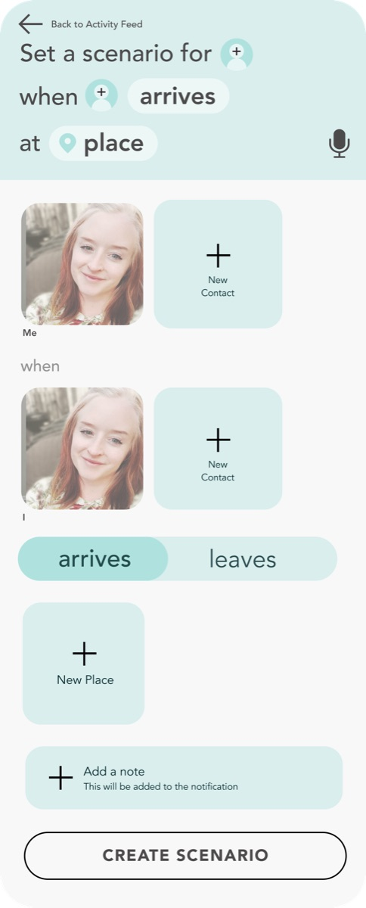

Gethr
60people in the
usability trial
A location app for families. In a 60-person trial most people could complete the core tasks, but many saw it as similar to Life360. Verizon moved on to other priorities, and the hardware tracker the app relied on never shipped.
Your role, and what you changed after the trial.